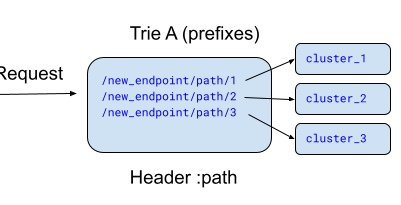
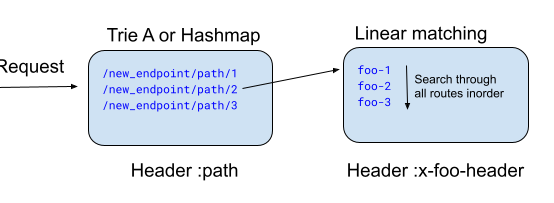

Matching API
Envoy makes use of a matching API to allow the various subsystems to express actions that should be performed based on incoming data.
The matching API is designed as a tree structure to allow for sublinear matching algorithms for better performance than the linear list matching as seen in Envoy’s HTTP routing. It makes heavy use of extension points to make it easy to extend to different inputs based on protocol or environment data as well as custom sublinear matchers and direct matchers.
Inputs and Matching Algorithms
Matching inputs define a way to extract the input value used for matching. The input functions are context-sensitive. For example, HTTP header inputs are applicable only in HTTP contexts, e.g. for matching HTTP requests.
HTTP Input Functions
These input functions are available for matching HTTP requests:
Network Input Functions
These input functions are available for matching TCP connections, UDP datagrams, and HTTP requests:
These input functions are available for matching TCP connections and HTTP requests:
These input functions are available for matching TCP connections:
SSL Input Functions
These input functions are available for matching TCP connections and HTTP requests:
Common Input Functions
These input functions are available in any context:
Custom Matching Algorithms
In addition to the built-in exact and prefix matchers, these custom matchers are available in some contexts:
Trie-based IP matcher applies to network inputs.
Common Expression Language (CEL) based matching:
CEL matching data input: CEL data input value.
CEL matching input matcher: CEL input matcher.
Regex matching using Hyperscan matcher.
Matching actions
The action in the matcher framework typically refers to the selected resource by name.
Network filter chain matching supports the following extensions:
Format string action computes the filter chain name from the connection dynamic metadata and its filter state. Example:
action:
name: foo
typed_config:
"@type": type.googleapis.com/envoy.config.core.v3.SubstitutionFormatString
text_format_source:
inline_string: "%DYNAMIC_METADATA(com.test_filter:test_key)%"
Filter Integration
Within supported environments (currently only HTTP filters), a wrapper proto can be used to instantiate a matching filter associated with the wrapped structure:
static_resources:
listeners:
- address:
socket_address:
address: 0.0.0.0
port_value: 443
listener_filters:
filter_chains:
- filters:
- name: envoy.filters.network.http_connection_manager
typed_config:
"@type": type.googleapis.com/envoy.extensions.filters.network.http_connection_manager.v3.HttpConnectionManager
stat_prefix: ingress_http
http_filters:
- name: with-matcher
typed_config:
"@type": type.googleapis.com/envoy.extensions.common.matching.v3.ExtensionWithMatcher
extension_config:
name: envoy.filters.http.fault
typed_config:
"@type": type.googleapis.com/envoy.extensions.filters.http.fault.v3.HTTPFault
abort:
http_status: 503
percentage:
numerator: 0
denominator: HUNDRED
delay:
fixed_delay: 3s
percentage:
numerator: 0
denominator: HUNDRED
xds_matcher:
matcher_tree:
input:
name: request-headers
typed_config:
"@type": type.googleapis.com/envoy.type.matcher.v3.HttpRequestHeaderMatchInput
header_name: some-header
exact_match_map:
# Note this additional indirection; this is a workaround for Protobuf oneof limitations.
map:
some_value_to_match_on: # This is the header value we're trying to match against.
action:
name: skip
typed_config:
"@type": type.googleapis.com/envoy.extensions.filters.common.matcher.action.v3.SkipFilter
- name: envoy.filters.http.router
typed_config:
"@type": type.googleapis.com/envoy.extensions.filters.http.router.v3.Router
route_config:
virtual_hosts:
- name: default
domains: ["*"]
routes:
- match: {prefix: "/"}
route:
cluster: service_foo
clusters:
- name: service_foo
load_assignment:
cluster_name: some_service
endpoints:
- lb_endpoints:
- endpoint:
address:
socket_address:
address: 127.0.0.1
port_value: 8080
The above example wraps a HTTP filter (the HTTPFault filter) in an ExtensionWithMatcher, allowing us to define a match tree to be evaluated in conjunction with evaluation of the wrapped filter. Prior to data being made available to the filter, it will be provided to the match tree, which will then attempt to evaluate the matching rules with the provided data, triggering an action if match evaluation results in an action.
In the above example, we are specifying that we want to match on the incoming request header
some-header by setting the input to
HttpRequestHeaderMatchInput
and configuring the header key to use. Using the value contained by this header, the provided
exact_match_map specifies which values we care about: we’ve configured a single value
(some_value_to_match_on) to match against. As a result, this config means that if we
receive a request which contains some-header: some_value_to_match_on as a header, the
SkipFilter
action will be resolved (causing the associated HTTP filter to be skipped). If no such header is
present, no action will be resolved and the filter will be applied as usual.
static_resources:
listeners:
- address:
socket_address:
address: 0.0.0.0
port_value: 443
listener_filters:
filter_chains:
- filters:
- name: envoy.filters.network.http_connection_manager
typed_config:
"@type": type.googleapis.com/envoy.extensions.filters.network.http_connection_manager.v3.HttpConnectionManager
stat_prefix: ingress_http
http_filters:
- name: with-matcher
typed_config:
"@type": type.googleapis.com/envoy.extensions.common.matching.v3.ExtensionWithMatcher
extension_config:
name: envoy.filters.http.fault
typed_config:
"@type": type.googleapis.com/envoy.extensions.filters.http.fault.v3.HTTPFault
abort:
http_status: 503
percentage:
numerator: 0
denominator: HUNDRED
delay:
fixed_delay: 3s
percentage:
numerator: 0
denominator: HUNDRED
xds_matcher:
# The top level matcher is a matcher tree which conceptually selects one of several subtrees.
matcher_tree:
input:
name: request-headers
typed_config:
"@type": type.googleapis.com/envoy.type.matcher.v3.HttpRequestHeaderMatchInput
header_name: some-header
exact_match_map:
# Note this additional indirection; this is a workaround for Protobuf oneof limitations.
map:
some_value_to_match_on: # This is the header value we're trying to match against.
# The OnMatch resulting on matching with this branch of the exact matcher is another matcher,
# allowing for recursive matching.
matcher:
# The inner matcher is a matcher list, which attempts to match a list of predicates.
matcher_list:
matchers:
- predicate:
or_matcher:
predicate:
- single_predicate:
input:
name: request-headers
typed_config:
"@type": type.googleapis.com/envoy.type.matcher.v3.HttpRequestHeaderMatchInput
header_name: second-header
value_match:
exact: foo
- single_predicate:
input:
name: request-headers
typed_config:
"@type": type.googleapis.com/envoy.type.matcher.v3.HttpRequestHeaderMatchInput
header_name: second-header
value_match:
exact: bar
on_match:
action:
name: skip
typed_config:
"@type": type.googleapis.com/envoy.extensions.filters.common.matcher.action.v3.SkipFilter
- name: envoy.filters.http.router
typed_config:
"@type": type.googleapis.com/envoy.extensions.filters.http.router.v3.Router
route_config:
virtual_hosts:
- name: default
domains: ["*"]
routes:
- match: {prefix: "/"}
route:
cluster: service_foo
clusters:
- name: service_foo
load_assignment:
cluster_name: some_service
endpoints:
- lb_endpoints:
- endpoint:
address:
socket_address:
address: 127.0.0.1
port_value: 8080
Above is a slightly more complicated example which combines a top level tree matcher with a
linear matcher. While the tree matchers provide very efficient matching, they are not very
expressive. The list matcher can be used to provide a much richer matching API, and can be combined
with the tree matcher in an arbitrary order. The example describes the following match logic: skip
the filter if some-header: skip_filter is present and second-header is set to either foo or
bar.
HTTP Filter Iteration Impact
The above example only demonstrates matching on request headers, which ends up being the simplest case due to it happening before the associated filter receives any data. Matching on other HTTP input sources is supported (e.g. response headers), but some discussion is warranted on how this works at a filter level.
Currently the match evaluation for HTTP filters does not impact control flow at all: if insufficient data is available to perform the match, callbacks will be sent to the associated filter as normal. Once sufficient data is available to match an action, this is provided to the filter. A consequence of this is that if the filter wishes to gate some behavior on a match result, it has to manage stopping the iteration on its own.
When it comes to actions such as SkipFilter, this means that if the skip condition is based on anything but the request headers, the filter might get partially applied, which might result in surprising behavior. An example of this would be to have a matching tree that attempts to skip the gRPC-Web filter based on response headers: clients assume that if they send a gRPC-Web request to Envoy, the filter will transform that into a gRPC request before proxying it upstream, then back into a gRPC-Web response on the encoding path. By skipping the filter based on response headers, the forward transformation will happen (the upstream receives a gRPC request), but the response is never converted back to gRPC-Web. As a result, the client will receive an invalid response back from Envoy. If the skip action was instead resolved on trailers, the same gRPC-Web filter would consume all the data but never write it back out (as this happens when it sees the trailers), resulting in a gRPC-Web response with an empty body.
HTTP Routing Integration
The matching API can be used with HTTP routing, by specifying a match tree as part of the virtual host and specifying a Route or RouteList as the resulting action. See the examples for how the match tree can be configured.
Sublinear Route Matching
An incoming request to Envoy needs to be matched to a cluster based on defined routes. Typically, a well understood, linear route search matching with O(n) search cost is employed which can become a scalability issue with higher latencies as the number of routes go up to O(1k+).
To overcome these scalability challenges the Generic Matcher API (matcher_tree can offer a robust and flexible framework for route matching with two distinct sublinear matching implementations:
Trie-based Matching (prefix_match_map): Employs a prefix trie structure for efficient longest prefix matching in significantly much lower time complexity of O(min{input key length, longest prefix match}) compared to traditional linear search with O(# of routes x avg length of routes). Trie implementation in Envoy leverages ranged vectors for storing child nodes to optimize on memory. Also, note that longest-prefix-match lookup of chars in trie does not support wildcards and each char is matched literally.
HashMap-based Matching (exact_match_map): Uses a hashmap structure for exact string matching in practically constant time O(1).
These implementations can be used recursively and even combined with each other in nested fashion using the Generic Matching API. It also enables mixing sublinear and linear route matching for breaking up route matching space for diverse use-cases.
Example 1: A single trie structure for all url paths in :path header
Suppose one wants to route requests with following path prefixes to respective clusters using trie or hashmap for sublinear route searching
A request with :path header set to url /new_endpoint/path/2/abc should be routed to cluster_2
To achieve the above results, Envoy config below will create a single trie structure with above path strings and calls findLongestPrefix() match once, for paths in incoming request :path header.
Note
Changing prefix_match_map to exact_match_map in below configuration will result in use of hash-based path matching (instead of trie) and will succeed in lookup if :path header in request matches exactly with one of the routes defined.
1 matcher_tree:
2 input:
3 name: request-headers
4 typed_config:
5 "@type": type.googleapis.com/envoy.type.matcher.v3.HttpRequestHeaderMatchInput
6 header_name: :path
7 prefix_match_map:
8 map:
9 "/new_endpoint/path/1":
10 action:
11 name: route_foo
12 typed_config:
13 "@type": type.googleapis.com/envoy.config.route.v3.Route
14 match:
15 prefix: ""
16 route:
17 cluster: cluster_1
18 "/new_endpoint/path/2":
19 action:
20 name: route_foo
21 typed_config:
22 "@type": type.googleapis.com/envoy.config.route.v3.Route
23 match:
24 prefix: ""
25 route:
26 cluster: cluster_2
27 "/new_endpoint/path/3":
28 action:
29 name: route_bar
30 typed_config:
31 "@type": type.googleapis.com/envoy.config.route.v3.Route
32 match:
33 prefix: ""
34 route:
35 cluster: cluster_3
Example 2: Configuration for hierarchical trie structures in the example below illustrates how three different trie structures can be created by Envoy using nested prefix_match_map which can do request matching across various headers.:
Note
Use of exact_match_map will result in creation of hashmaps instead of tries.
For an incoming request with :path header set to say /new_endpoint/path/2/video, x-foo-header set to foo-2 and x-bar-header set to bar-2, three longest-prefix-match trie lookups will happen across A, B and C tries in the order of nesting for a successful request match.
1 matcher_tree:
2 input:
3 name: request-headers
4 typed_config:
5 "@type": type.googleapis.com/envoy.type.matcher.v3.HttpRequestHeaderMatchInput
6 header_name: :path
7 prefix_match_map:
8 map:
9 "/new_endpoint/path/1":
10 action:
11 name: route_foo
12 typed_config:
13 "@type": type.googleapis.com/envoy.config.route.v3.Route
14 match:
15 prefix: ""
16 route:
17 cluster: cluster_1
18 "/new_endpoint/path/2":
19 matcher:
20 matcher_tree:
21 input:
22 name: request-headers
23 typed_config:
24 "@type": type.googleapis.com/envoy.type.matcher.v3.HttpRequestHeaderMatchInput
25 header_name: x-foo-header
26 prefix_match_map:
27 map:
28 "foo-1":
29 action:
30 name: route_foo
31 typed_config:
32 "@type": type.googleapis.com/envoy.config.route.v3.Route
33 match:
34 prefix: ""
35 route:
36 cluster: cluster_foo_1
37 "foo-2":
38 matcher:
39 matcher_tree:
40 input:
41 name: request-headers
42 typed_config:
43 "@type": type.googleapis.com/envoy.type.matcher.v3.HttpRequestHeaderMatchInput
44 header_name: x-bar-header
45 prefix_match_map:
46 map:
47 "bar-1":
48 action:
49 name: route_foo
50 typed_config:
51 "@type": type.googleapis.com/envoy.config.route.v3.Route
52 match:
53 prefix: ""
54 route:
55 cluster: cluster_bar_1
56 "bar-2":
57 action:
58 name: route_foo
59 typed_config:
60 "@type": type.googleapis.com/envoy.config.route.v3.Route
61 match:
62 prefix: ""
63 route:
64 cluster: cluster_bar_2
65 "bar-3":
66 action:
67 name: route_foo
68 typed_config:
69 "@type": type.googleapis.com/envoy.config.route.v3.Route
70 match:
71 prefix: ""
72 route:
73 cluster: cluster_bar_3
74 "foo-3":
75 action:
76 name: route_foo
77 typed_config:
78 "@type": type.googleapis.com/envoy.config.route.v3.Route
79 match:
80 prefix: ""
81 route:
82 cluster: cluster_foo_3
83 "/new_endpoint/path/3":
84 action:
85 name: route_bar
86 typed_config:
87 "@type": type.googleapis.com/envoy.config.route.v3.Route
88 match:
89 prefix: ""
90 route:
91 cluster: cluster_3
Example 3: Mixing sublinear route matching with traditional prefix based inorder linear routing.
 1 matcher_tree:
2 input:
3 name: request-headers
4 typed_config:
5 "@type": type.googleapis.com/envoy.type.matcher.v3.HttpRequestHeaderMatchInput
6 header_name: :path
7 prefix_match_map:
8 map:
9 "/new_endpoint/path/1":
10 action:
11 name: route_foo
12 typed_config:
13 "@type": type.googleapis.com/envoy.config.route.v3.Route
14 match:
15 prefix: ""
16 route:
17 cluster: cluster_1
18 "/new_endpoint/path/2":
19 action:
20 name: route_bar
21 typed_config:
22 "@type": type.googleapis.com/envoy.config.route.v3.Route
23 match:
24 prefix: ""
25 route:
26 cluster: cluster_2
27 "/new_endpoint/path/3":
28 action:
29 name: route_list
30 typed_config:
31 "@type": type.googleapis.com/envoy.config.route.v3.RouteList
32 routes:
33 - match:
34 prefix: ""
35 headers:
36 - name: x-foo-header
37 string_match:
38 exact: foo-1
39 route:
40 cluster: cluster_3_1
41 - match:
42 prefix: ""
43 headers:
44 - name: x-foo-header
45 string_match:
46 exact: foo-2
47 route:
48 cluster: cluster_3_2
49 - match:
50 prefix: ""
51 headers:
52 - name: x-foo-header
53 string_match:
54 exact: foo-3
55 route:
56 cluster: cluster_3_3
Example 4: This example shows how one can run exact matches first (using hashmap) and if no matches are found then attempt prefix matches (using tries).
1 matcher_tree:
2 input:
3 name: request-headers
4 typed_config:
5 "@type": type.googleapis.com/envoy.type.matcher.v3.HttpRequestHeaderMatchInput
6 header_name: :path
7 exact_match_map:
8 map:
9 "/new_endpoint/foo/0":
10 action:
11 name: route_foo
12 typed_config:
13 "@type": type.googleapis.com/envoy.config.route.v3.Route
14 match:
15 prefix: ""
16 route:
17 cluster: cluster_0
18 "/new_endpoint/foo/1":
19 action:
20 name: route_bar
21 typed_config:
22 "@type": type.googleapis.com/envoy.config.route.v3.Route
23 match:
24 prefix: ""
25 route:
26 cluster: cluster_1
27 "/new_endpoint/foo/2":
28 action:
29 name: route_bar
30 typed_config:
31 "@type": type.googleapis.com/envoy.config.route.v3.Route
32 match:
33 prefix: ""
34 route:
35 cluster: cluster_2
36 on_no_match:
37 matcher:
38 matcher_tree:
39 input:
40 name: prefix-matches
41 typed_config:
42 "@type": type.googleapis.com/envoy.type.matcher.v3.HttpRequestHeaderMatchInput
43 header_name: :path
44 prefix_match_map:
45 map:
46 "/new_endpoint/foo":
47 action:
48 name: route_foo_prefix
49 typed_config:
50 "@type": type.googleapis.com/envoy.config.route.v3.Route
51 match:
52 prefix: ""
53 route:
54 cluster: cluster_1
55 "/new_endpoint":
56 action:
57 name: route_foo_prefix
58 typed_config:
59 "@type": type.googleapis.com/envoy.config.route.v3.Route
60 match:
61 prefix: ""
62 route:
63 cluster: cluster_2
Match Tree Validation
As the match tree structure is very flexible, some filters might need to impose additional restrictions on what kind of match trees can be used. This system is somewhat inflexible at the moment, only supporting limiting the input sources to a specific set. For example, a filter might specify that it only works with request headers: in this case a match tree that attempts to match on request trailers or response headers will fail during configuration load, reporting back which data input was invalid.
This is done for example to limit the issues talked about in the above section or to help users understand in what context a match tree can be used for a specific filter. Due to the limitations of the validation framework at the current time, it is not used for all filters.
For HTTP filters, the restrictions are specified by the filter implementation, so consult the individual filter documentation to understand whether there are restrictions in place.
For example, in the example below, the match tree could not be used with a filter that restricts the the match tree to only use HttpRequestHeaderMatchInput.
static_resources:
listeners:
- address:
socket_address:
address: 0.0.0.0
port_value: 443
listener_filters:
filter_chains:
- filters:
- name: envoy.filters.network.http_connection_manager
typed_config:
"@type": type.googleapis.com/envoy.extensions.filters.network.http_connection_manager.v3.HttpConnectionManager
stat_prefix: ingress_http
http_filters:
- name: with-matcher
typed_config:
"@type": type.googleapis.com/envoy.extensions.common.matching.v3.ExtensionWithMatcher
extension_config:
name: envoy.filters.http.fault
typed_config:
"@type": type.googleapis.com/envoy.extensions.filters.http.fault.v3.HTTPFault
abort:
http_status: 503
percentage:
numerator: 0
denominator: HUNDRED
delay:
fixed_delay: 3s
percentage:
numerator: 0
denominator: HUNDRED
xds_matcher:
matcher_list:
matchers:
- predicate:
or_matcher:
predicate:
- single_predicate:
input:
name: request-headers
typed_config:
"@type": type.googleapis.com/envoy.type.matcher.v3.HttpRequestHeaderMatchInput
header_name: request-header
value_match:
exact: foo
- single_predicate:
input:
name: request-headers
typed_config:
"@type": type.googleapis.com/envoy.type.matcher.v3.HttpResponseHeaderMatchInput
header_name: response-header
value_match:
exact: bar
on_match:
action:
name: skip
typed_config:
"@type": type.googleapis.com/envoy.extensions.filters.common.matcher.action.v3.SkipFilter
- name: envoy.filters.http.router
typed_config:
"@type": type.googleapis.com/envoy.extensions.filters.http.router.v3.Router
route_config:
virtual_hosts:
- name: default
domains: ["*"]
routes:
- match: {prefix: "/"}
route:
cluster: service_foo
clusters:
- name: service_foo
load_assignment:
cluster_name: some_service
endpoints:
- lb_endpoints:
- endpoint:
address:
socket_address:
address: 127.0.0.1
port_value: 8080